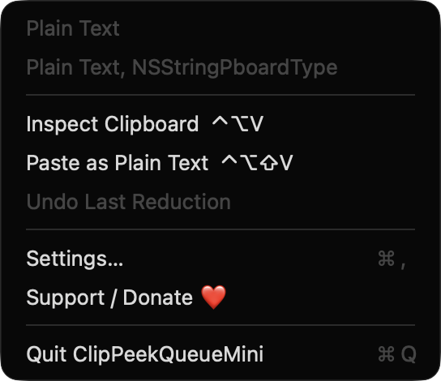
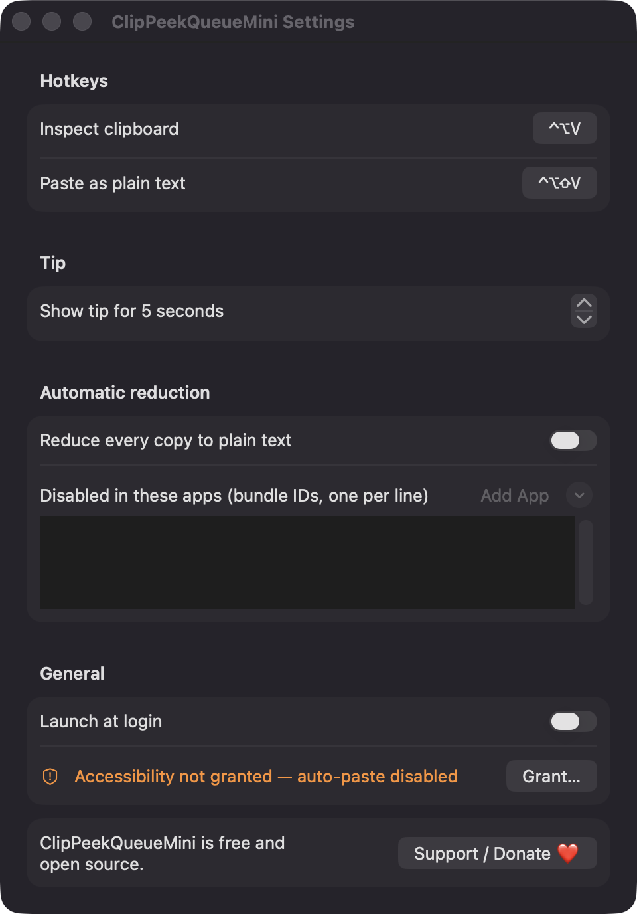

Floating tip near the pointer
Press Control Option V to see a text, image or file preview. The tip does not steal focus and hides after 2 to 20 seconds, which you set in Settings.
Open source · macOS 14+ · Universal binary · Clipboard
ClipPeekQueueMini shows a small floating tip with a preview, size and every format on your clipboard. Press Control Option V, then strip it to plain text with one key.
Free & MIT licensed · Apple Silicon & Intel · Latest release

Features
A small inspector that shows the pasteboard as it is and reduces it to the one format you need.
Press Control Option V to see a text, image or file preview. The tip does not steal focus and hides after 2 to 20 seconds, which you set in Settings.
See character count, pixel dimensions, file count and total bytes. A list of the types present shows friendly names and byte sizes.
Press P for plain text, F for the first file path, I for a PNG image, or T for a trimmed single line. Both hotkeys can be re-recorded.
Control Option Shift V reduces the clipboard and sends Command V to the frontmost app in one step.
Original clipboard contents are kept for your last five reductions. Restore any of them from the tip with U or from the menu.
Turn on auto-reduce to strip rich text from every copy. It skips concealed content such as password manager entries and can be disabled per app.
Screenshots

Install
ClipPeekQueueMini is open source and not notarized with a paid Apple Developer ID, so macOS needs one extra step the first time.
xattr -cr /Applications/ClipPeekQueueMini.app
Download
Free, forever. Built for macOS 14 Sonoma or newer, Apple Silicon and Intel.
Not notarized: on first launch right-click ClipPeekQueueMini.app → Open.
FAQ
Yes. It is released under the MIT license, with no ads, accounts or paid tier. If it is useful to you, there is an optional Support button that links to Ko-fi.
Accessibility is optional and is only used to send Command V for the Paste as Plain Text hotkey. It is requested the first time you use paste, after an explanation. Without it, the clipboard is still reduced and you press Command V yourself.
Nothing leaves your Mac. The app has no backend and does not request network access. Your settings are stored locally, and the undo history of the last five reductions is held in memory only.
Notarization requires a paid Apple Developer account, which this free project does not have. Right-click the app and choose Open once to run it, or build it yourself from source with the included instructions.
Support ❤️
ClipPeekQueueMini is a free, open-source alternative to paid utilities. If it earns a spot on your Mac, a coffee keeps the updates coming.
☕ Support Or on Ko-fi